Capabilities
What we make, how we make it, and the numbers a buyer needs before the first call.
Products
Woven womenswear is where the factory has spent thirty years. The list below is what runs on the line week in, week out; other womenswear categories are developed with you case by case.
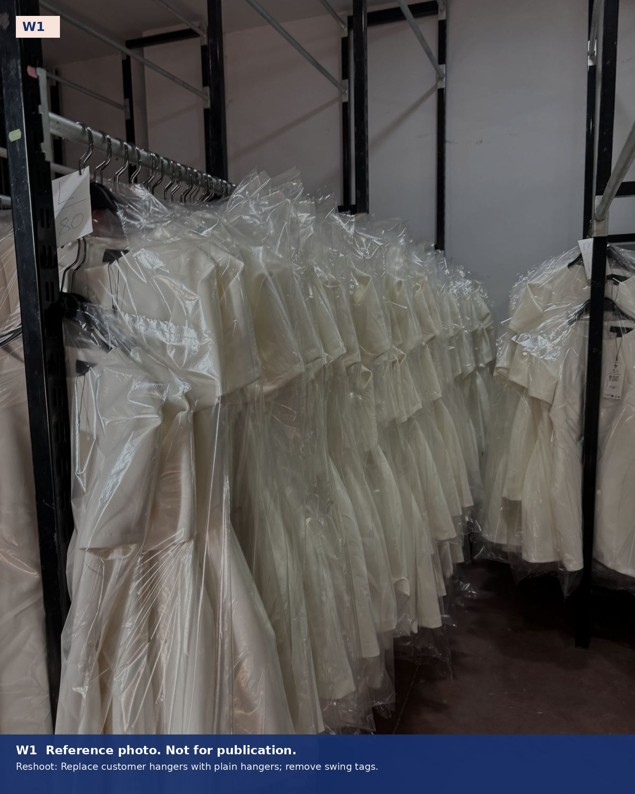
| Category | Typical constructions | Typical fabrics |
|---|---|---|
| Shirts | Collar stands, yokes, plackets, cuffs, buttonholes, pleats | Cotton poplin, Oxford, linen, viscose, Tencel |
| Blouses | Ruffles, gathers, bias binding, covered buttons, ties | Viscose, crepe, satin, chiffon with lining |
| Dresses | Shirt dresses, fitted and flared, lined bodices, invisible zips | Poplin, crepe, satin, linen blends |
| Skirts and co-ords | Pleated, wrap, elasticated and zipped waists | As above |
| Lightweight jackets | Unlined and half-lined overshirts and shackets | Twill, linen, cotton blends |
| Other | Further womenswear categories are developed case by case against your tech pack. Ask us. | |
From tech pack to trailer
One team takes your style from the first pattern to a finished, packed garment ready for the road, and stays responsible at every stage in between.
Development
Patterns and grading are prepared from your tech pack, block or sample; markers and samples are made in-house and fitted on the dummy before anything ships.
- Pattern from tech pack, block or reference garment
- Grading to your size chart
- Marker making and fabric consumption
- Proto, fit and pre-production samples
- Sampling: 5–7 working days from fabric in hand
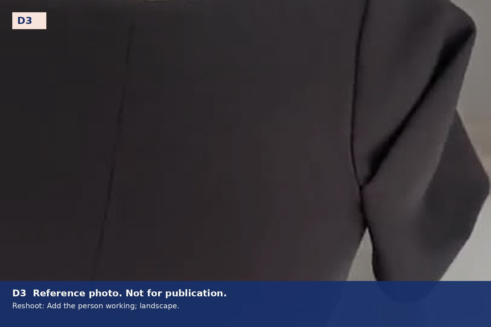
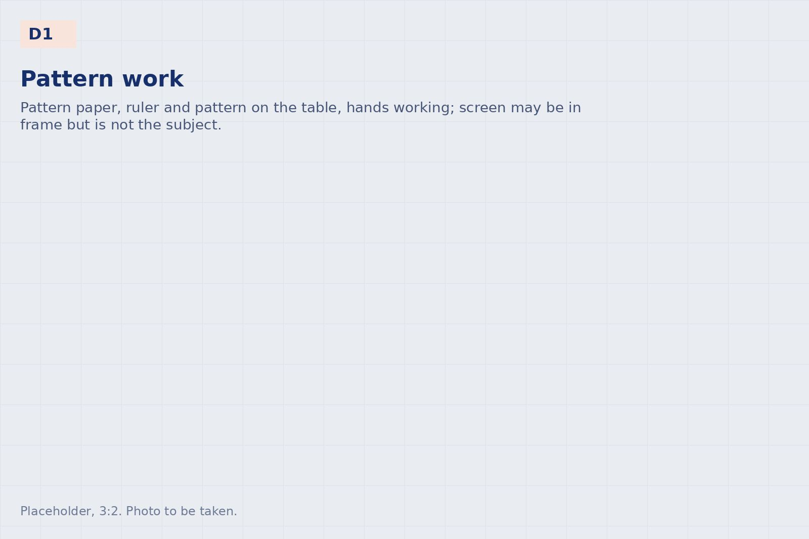
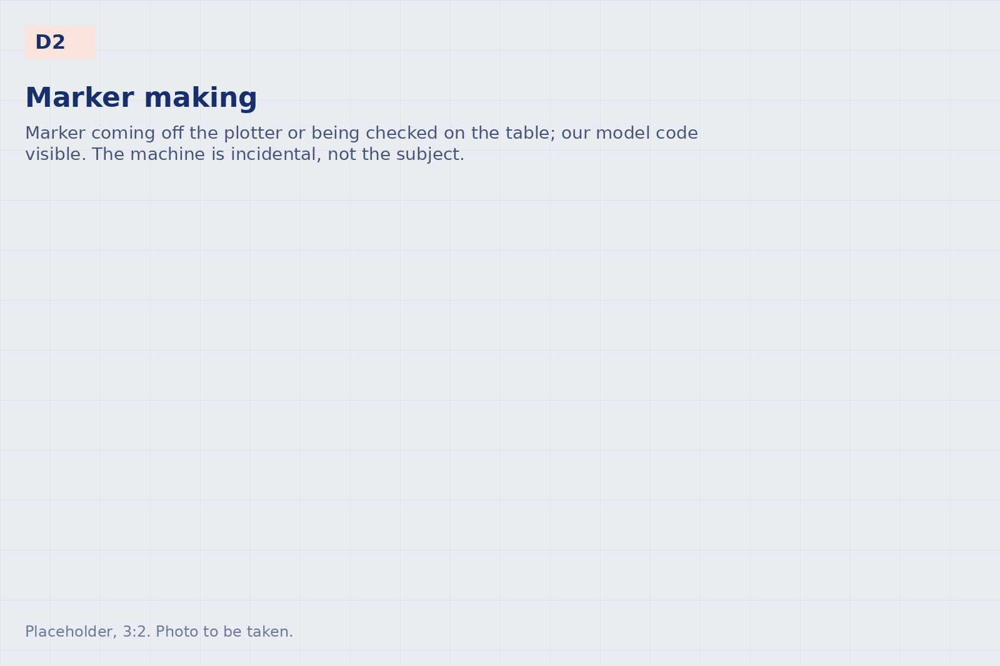
Cutting
Spreading by hand for delicate wovens, paper markers, straight knife and band knife, fusing press, numbered bundles. Fabric relaxation and shade sorting as the fabric requires.
- Cutting table: [length] m
- Straight knife, band knife, fusing press
- Bundle and ticket system
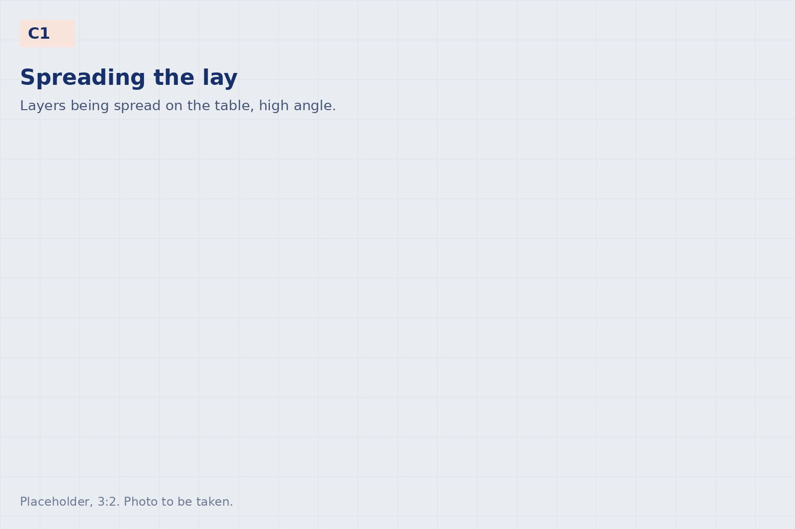
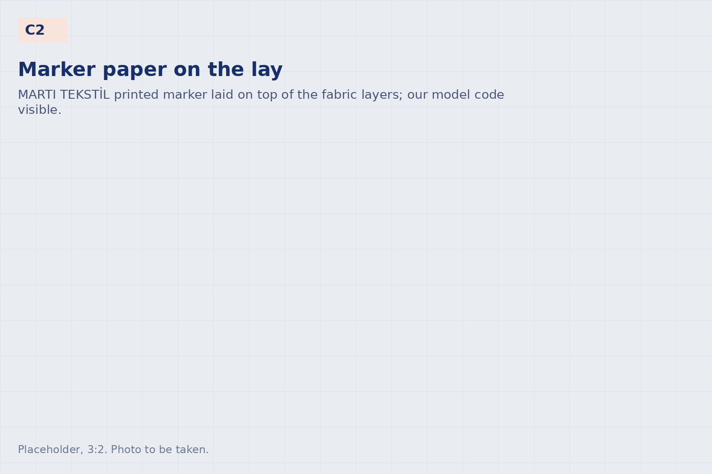
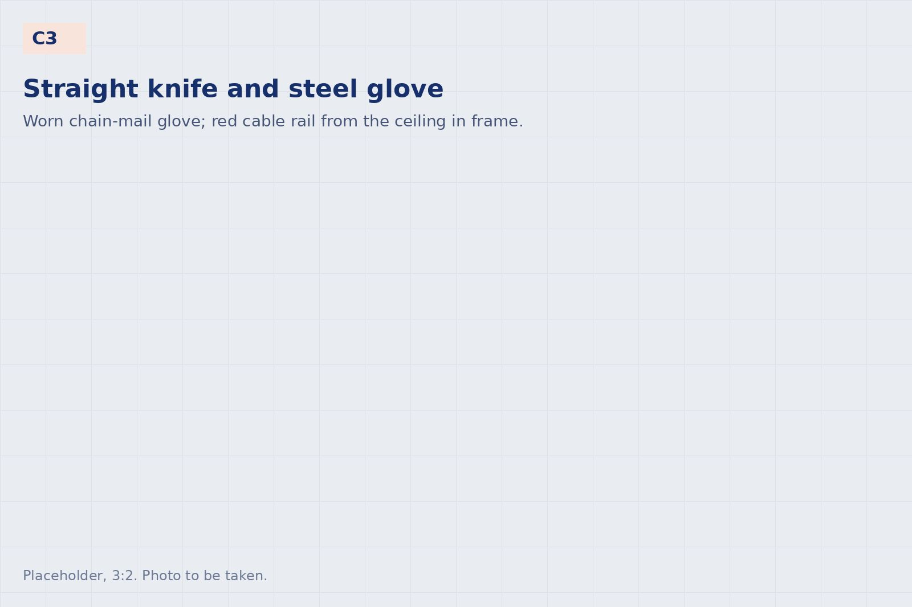
Sewing
A line specialised in shirts, blouses and dresses: lockstitch, overlock, buttonhole, button attach and blind hem, run by operators who have sewn these constructions for years, and equipped for the wider womenswear range.
- [x] sewing machines across [x] lines
- Special machines: [list: buttonhole, button attach, bartack, blind hem, …]
- In-line quality checks at key points
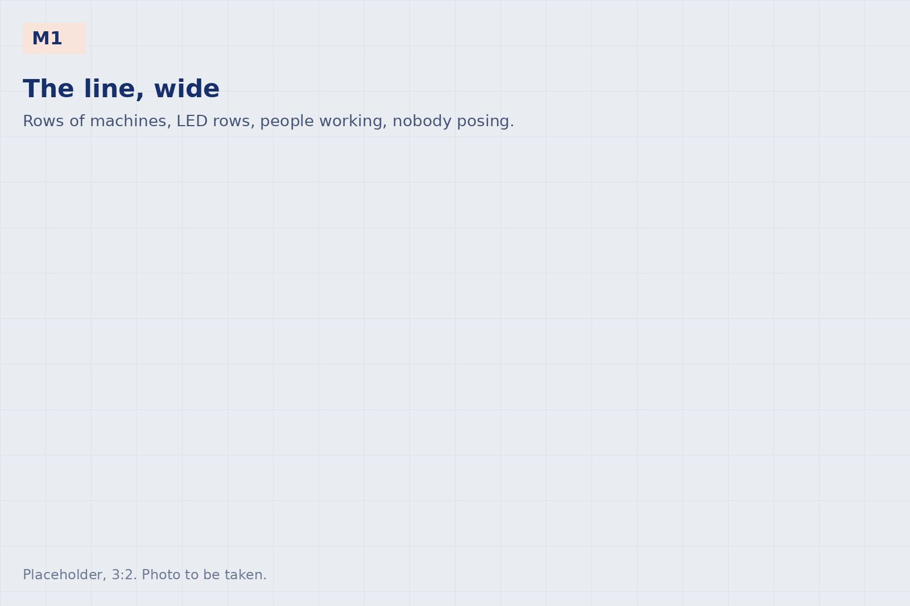
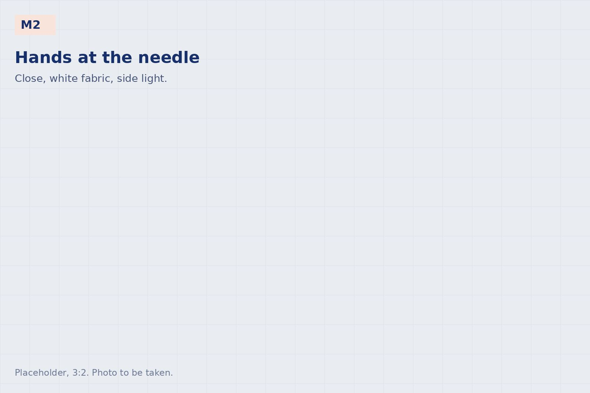
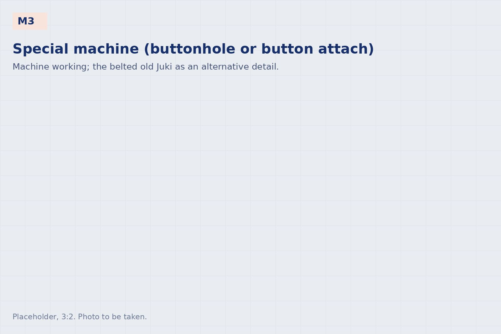
Finishing and quality
Thread trimming, pressing and steam, final inspection against your QC sheet and measurement specification, bagging, size cards, hanging or boxed. Inspection records are available per order.
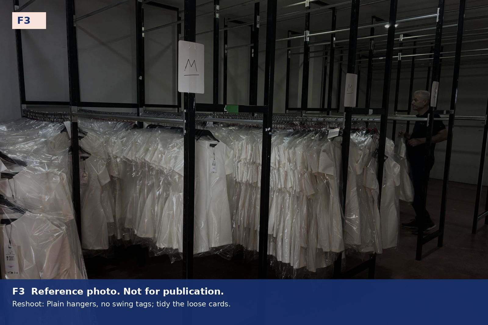
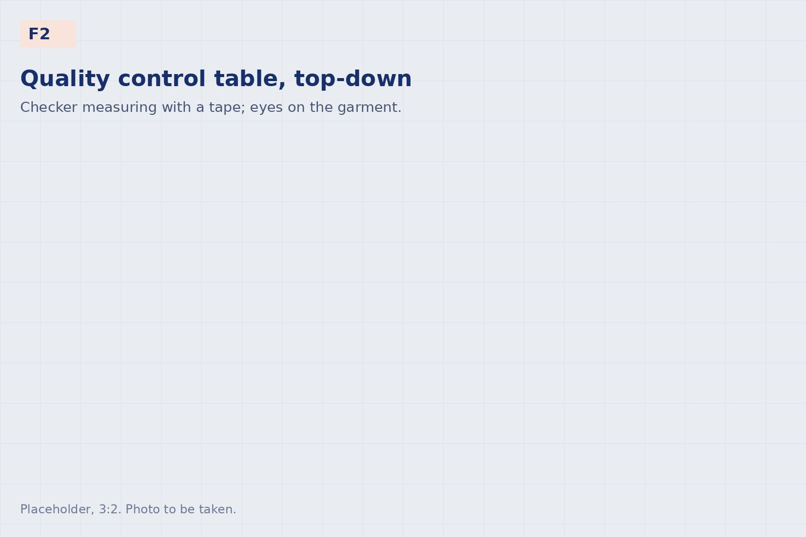
Logistics
Garments packed the way your warehouse receives them: on hangers in the trailer, or boxed and palletised. Road freight to the United Kingdom and Europe; export documents and origin declarations prepared by us.
- Hanging-garment or boxed delivery
- Transit to the United Kingdom and Europe: 7–10 days by road
- Terms: FCA İzmir, or delivered through our Manchester office [DDP: when available]
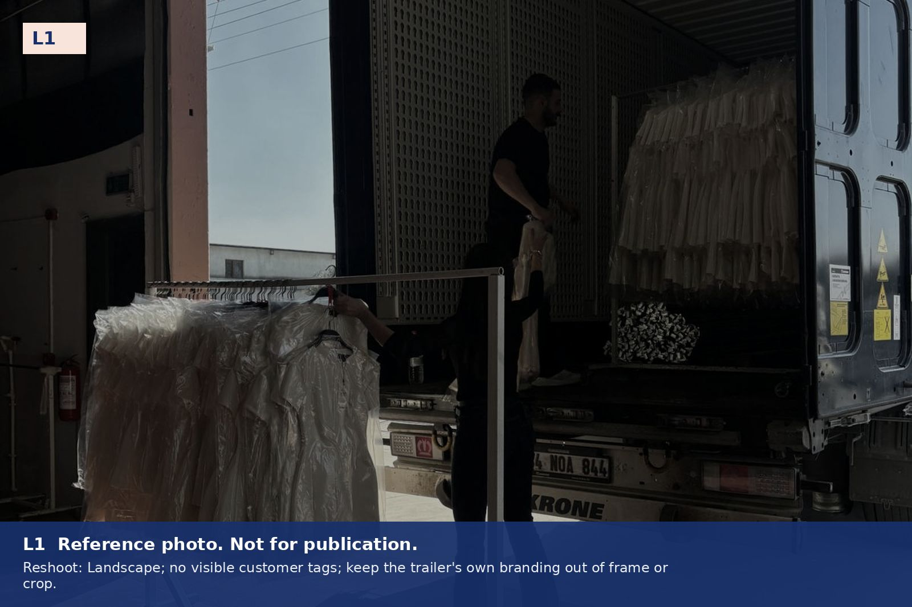
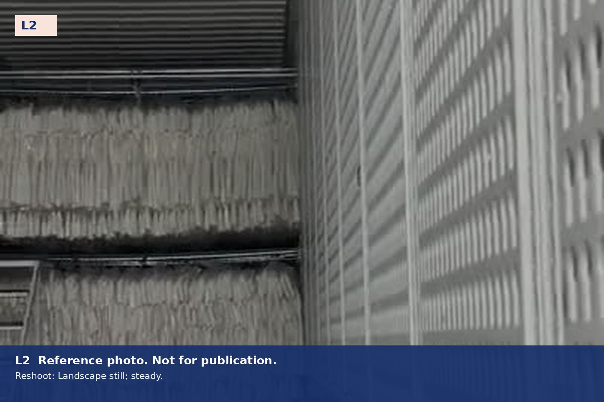
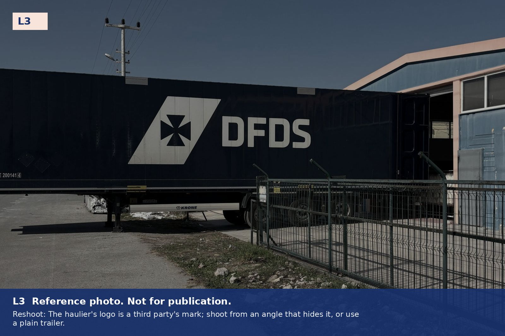
Capacity and terms
The figures below are indicative. Each style is confirmed at quotation, since construction and finish determine the minutes per piece. Send us a tech pack for a costing.
| Monthly capacity | About 30,000 pieces of woven womenswear, depending on the model |
|---|---|
| Minimum per style | 1,000 pieces; 500 per colour |
| Sampling | 5–7 working days from fabric in hand |
| Production lead time | Typically 6–8 weeks from fabric in hand and approved pre-production sample |
| Fabric origin and duty | Garments made from Turkish, UK or EU-woven fabric enter the United Kingdom duty-free under the UK–Türkiye agreement, with an origin declaration on our invoice; third-country fabric may carry UK duty. Deliveries to the EU move under the EU–Türkiye customs union with an A.TR movement certificate. The applicable status is confirmed with each quotation. |
| Payment | Terms agreed per order |
| Working with | Brands directly, and through sourcing agents and buying offices in the United Kingdom and Europe |